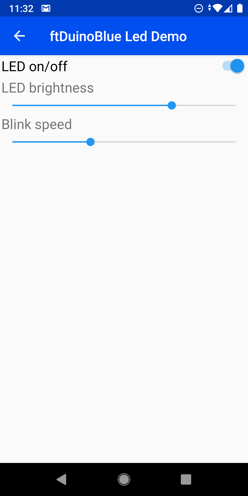

ftDuinoBlue
ftDuinoBlue allows you to add a custom bluetooth user interface
to your ftDuino or Arduino project. This interface can be accessed
using the free ftDuinoBlue Android app.
Just add the follwing XML to your sketch:
To create this user interface in the adroid app:

The full demo sketch can be found in the ftDuino repository.
Currently the app can be
found here. It will later be moved
to the android store.
How it works
- You simply design a custom interface exactly matching your needs.
- All setup takes place in the ftDuino/Arduino sketch.
- On connection the Android app automatically creates the user interface as requested by the ftDuino/Arduino.
- Various user interface elements available:
- Push buttons
- Switches
- Joysticks
- Sliders
- Texts and Labels
- You use the controls to command your ftDuino/Arduino.
- Your ftDuino/Arduino gives you visual feedback.
What you need
Only very few and cheap parts are needed:
- The ftDuinoBlue app for android
- An ftDuino or arduino
- A HM-10 bluetooth module for your ftDuino or Arduino